pacman::p_load(tidyverse, naniar,imputeTS, DT, lubridate,ggplot2,ggstatsplot,plotly,
patchwork,ggthemes,dplyr,ggridges,gridExtra)Take home Exercise 3
1 Overview
We are tasked with selecting one module from our proposed Shiny application and completing the following tasks:
Package Verification: Ensure that the required R packages for the application are available on CRAN.
Code Validation: Develop and test the R code to confirm that it runs properly and returns the expected output.
Parameter and Output Definition: Identify the parameters and outputs that will be featured in the application.
UI Component Selection: Choose the appropriate Shiny UI components to display the identified parameters.
2 Project Information
In this project, we’ll be analysing weather patterns across different parts of Singapore and building an interactive R Shiny app.
For this exercise, let’s focus on the EDA and CDA tabs, where we can explore data distribution, spot trends by time or station, and use statistical methods to support our findings.s.
3 Data Preparation
3.1 Installing R packages
When working in R, we often rely on external packages to add more functionality — like data manipulation, visualization, or statistical analysis.
To use these packages, we need to install them first using functions like install.packages("package_name"). Once installed, we can load them into our R session using library(package_name). To make this process more efficient, especially when dealing with many packages, we can use tools like pacman::p_load() which installs missing packages and loads them in one step.
3.2 Importing Data
We will use the weather dataset for 17 stations between 2020 to 2024 from Meteorological Service Singapore (MSS). After cleaning and preparing the data, we narrowed it down to 11 stations. The steps taken during the data preparation process are explained in detail.
weather <- read_csv("data/weather_data_cleaned.csv") 3.3 Summarizing the data
glimpse(weather)Rows: 30,532
Columns: 9
$ Region <chr> "North", "North", "North", "North", "North…
$ Station <chr> "Admiralty", "Admiralty", "Admiralty", "Ad…
$ Date <date> 2020-01-01, 2020-01-02, 2020-01-03, 2020-…
$ `Daily Rainfall Total (mm)` <dbl> 0.0, 0.0, 0.0, 0.4, 8.6, 10.0, 5.6, 1.0, 1…
$ `Mean Temperature (°C)` <dbl> 27.5, 27.7, 27.9, 29.2, 26.3, 26.4, 28.7, …
$ `Maximum Temperature (°C)` <dbl> 31.1, 30.7, 32.7, 35.7, 30.4, 30.4, 32.3, …
$ `Minimum Temperature (°C)` <dbl> 25.4, 25.9, 24.8, 26.0, 24.7, 24.2, 24.6, …
$ Latitude <dbl> 1.4439, 1.4439, 1.4439, 1.4439, 1.4439, 1.…
$ Longitude <dbl> 103.7854, 103.7854, 103.7854, 103.7854, 10…4 Exploratory Data Analysis
In the data set, there are 4 variables for users to choose to explore.
Daily Rainfall Total (mm)Mean Temperature (°C)Minimum Temperature (°C)Maximum Temperature (°C)
For this section, we will use violin plots and box plots to visualize the trend of temperature variables over specified periods or at particular stations. However, for rainfall data, dot plots will be used to enhance the better visualization.
Other exploratory plots may include in the future work.
colnames(weather)[1] "Region" "Station"
[3] "Date" "Daily Rainfall Total (mm)"
[5] "Mean Temperature (°C)" "Maximum Temperature (°C)"
[7] "Minimum Temperature (°C)" "Latitude"
[9] "Longitude" 4.1 Compare Temperature Range (Max - Min) Across Stations by Region
weather <- weather %>%
mutate(Date = ymd(Date),
Year = year(Date),
Month = month(Date, label = TRUE))
weather %>%
mutate(
TempRange = `Maximum Temperature (°C)` - `Minimum Temperature (°C)`,
Region = factor(Region, levels = c("Central", "East", "North", "Northeast", "West")),
Station = fct_reorder(Station, as.numeric(Region)) # Group by Region levels explicitly
) %>%
ggplot(aes(x = Station, y = TempRange, fill = Region)) +
geom_boxplot() +
theme(axis.text.x = element_text(angle = 90)) +
labs(
title = "Temperature Range by Station (Grouped by Region)",
y = "Temperature Range (°C)",
x = "Station",
fill = "Region"
)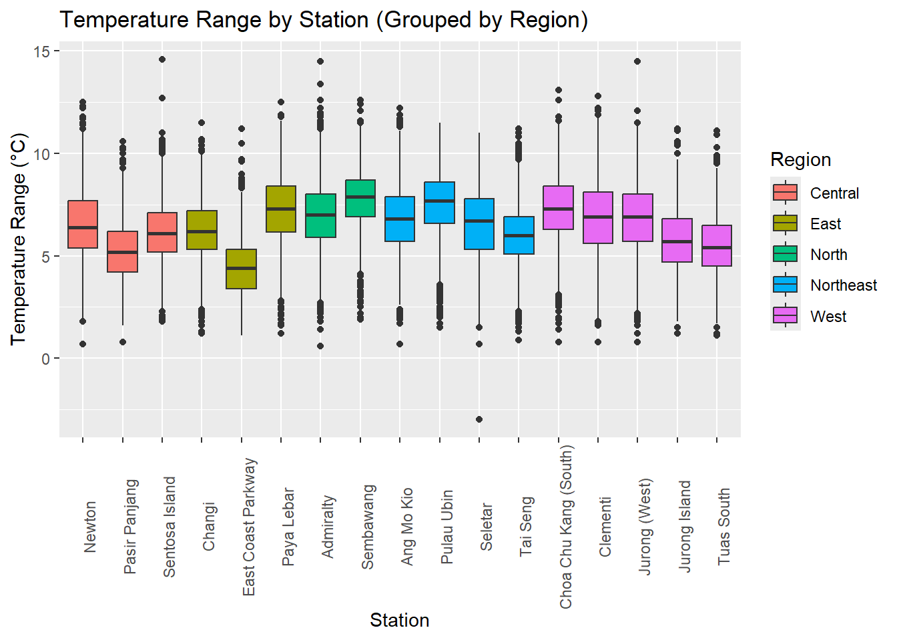
4.2 Compare Monthly Averages of Temperature and Rainfall Across Years
# Ensure Month is an ordered factor with month names
weather <- weather %>%
mutate(
Month = month(Date, label = TRUE, abbr = TRUE), # e.g., Jan, Feb
Year = year(Date)
)
# Recreate temperature plot
temp_plot <- weather %>%
group_by(Year, Month) %>%
summarise(AvgTemp = mean(`Mean Temperature (°C)`, na.rm = TRUE)) %>%
ggplot(aes(x = Month, y = AvgTemp, group = Year, color = as.factor(Year))) +
geom_line(size = 1) +
labs(title = "Monthly Average Temperature by Year", y = "Temperature (°C)", x = "Month", color = "Year") +
theme_minimal()
# Recreate rainfall plot
rain_plot <- weather %>%
group_by(Year, Month) %>%
summarise(TotalRain = sum(`Daily Rainfall Total (mm)`, na.rm = TRUE)) %>%
ggplot(aes(x = Month, y = TotalRain, group = Year, color = as.factor(Year))) +
geom_line(size = 1) +
labs(title = "Monthly Total Rainfall by Year", y = "Rainfall (mm)", x = "Month", color = "Year") +
theme_minimal()
# Combine both
temp_plot / rain_plot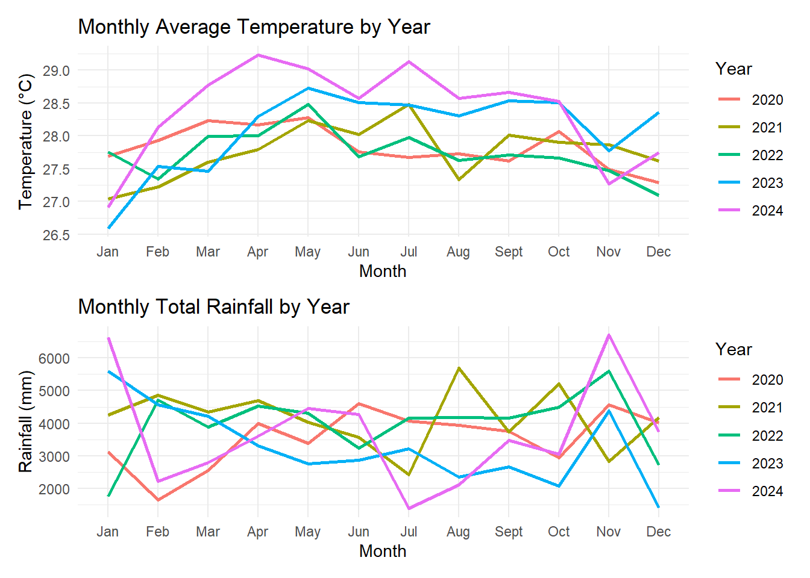
4.3 Top 10 Wettest Stations (Annual Avg)
station_summary <- weather %>%
group_by(Station) %>%
summarise(TotalRain = sum(`Daily Rainfall Total (mm)`, na.rm = TRUE))
station_summary %>%
top_n(10, TotalRain) %>%
ggplot(aes(x = reorder(Station, TotalRain), y = TotalRain)) +
geom_point(size = 5, color = "#2c7fb8") +
geom_segment(aes(xend = Station, y = 0, yend = TotalRain), color = "#2c7fb8", linewidth = 1.2) +
coord_flip() +
labs(title = "Top 10 Wettest Stations", x = "Station", y = "Total Rainfall (mm)") +
theme_minimal(base_size = 13) +
theme(plot.title = element_text(face = "bold"))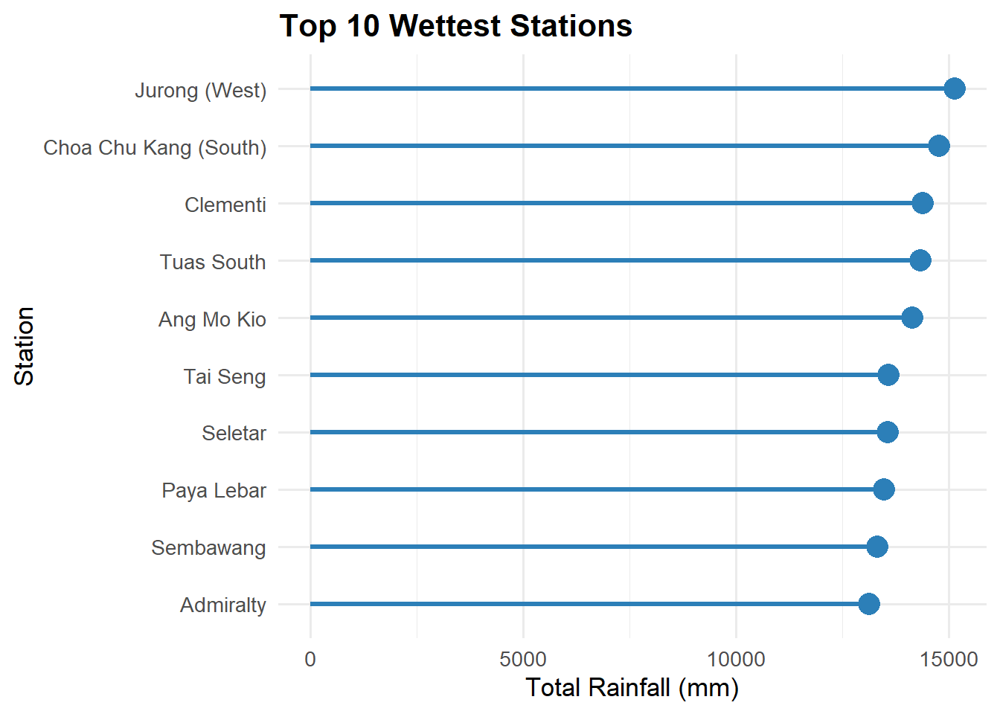
### 4.4 Highlight Top 10 Extreme Weather Days Per Year
::: {.cell}
```{.r .cell-code}
library(dplyr)
library(lubridate)
library(plotly)
# Prepare the data: extract year and get Top 10 rainiest days per year
top_rain_days <- weather %>%
mutate(Date = ymd(Date),
Year = year(Date)) %>%
group_by(Year) %>%
slice_max(`Daily Rainfall Total (mm)`, n = 10, with_ties = FALSE) %>%
ungroup()
# Create plotly bar chart
plot_ly(top_rain_days,
x = ~Date,
y = ~`Daily Rainfall Total (mm)`,
type = 'bar',
color = ~as.factor(Year),
text = ~paste0(
"📅 Date: ", Date, "<br>",
"📍 Station: ", Station, "<br>",
"🌧️ Rainfall: ", round(`Daily Rainfall Total (mm)`), " mm"
),
hoverinfo = "text") %>%
layout(title = "Top 10 Rainiest Days Each Year (Interactive)",
xaxis = list(title = "Date"),
yaxis = list(title = "Daily Rainfall Total (mm)"),
legend = list(title = list(text = "Year")),
hovermode = "closest"):::
4.5 Explore Seasonal Patterns Using Monthly Trends by Station
weather %>%
group_by(Station, Month) %>%
summarise(AvgTemp = mean(`Mean Temperature (°C)`, na.rm = TRUE)) %>%
ggplot(aes(x = Month, y = AvgTemp, group = Station, color = Station)) +
geom_line() +
labs(title = "Monthly Temperature Patterns by Station", x = "Month", y = "Avg Temperature (°C)")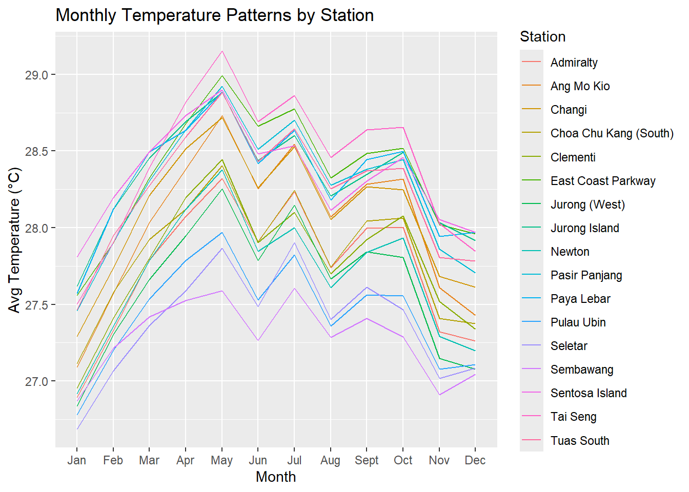
5 Confirmatory Data Analysis
For this section, we will conduct statistical analysis by using Kruskal-Wallis one-way ANOVA test to confirm the trends of variables for specified periods or stations. In the dataset, there are 4 variables for users to choose to explore.
Daily Rainfall Total (mm)Mean Temperature (°C)Minimum Temperature (°C)Maximum Temperature (°C)
5.1 Compare Mean Temperature (°C) for Station(s) Across the specified Year
Hypothesis
H0 : Daily mean temperature in 2021 across different stations are equal
H1 : Daily mean temperature in 2021 across different station are not equal
# User define the parameter
selected_year <- "2021"
selected_StatApproach <- "nonparametric"
#Filter data for the specified year
allstations_year <- weather %>%
group_by(Station) %>%
filter(Year == selected_year)
ggbetweenstats(data = allstations_year,
x = Station,
y = `Mean Temperature (°C)`,
type = selected_StatApproach,
mean.ci = TRUE,
pairwise.comparisons = TRUE,
pairwise.annotation = FALSE,
pairwise.display = "none",
sig.level = NA,
p.adjust.method = "fdr",
messages = FALSE)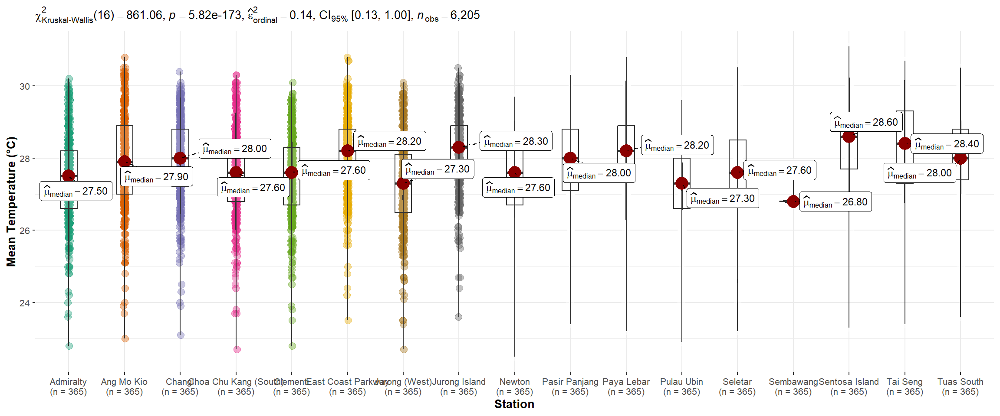
5.2 Compare Mean Temperature (°C) for One Station Across Different Years
Hypothesis
H0 : Daily mean temperature in Ang Mo Kio across different years are equal
H1 : Daily mean temperature in Ang Mo Kio across different years are not equal
selected_onestation <- "Ang Mo Kio"
selected_StatApproach <- "nonparametric"
#Filter Ang Mo Kio data
onestation_data <- weather %>%
filter(Station == selected_onestation)
ggbetweenstats(data = onestation_data,
x = Year,
y = `Mean Temperature (°C)`,
type= selected_StatApproach, # for non-parametric
mean.ci = TRUE,
pairwise.comparisons = TRUE,
pairwise.annotation = FALSE,
pairwise.display = "none",
sig.level = NA,
p.adjust.method = "fdr",
messages = FALSE)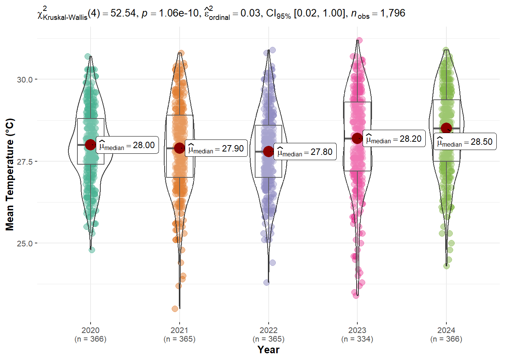
5.3 Compare Mean Temperature (°C) for Multiple Stations Across Different Years
Hypothesis
H0 : Daily mean temperature in Seletar and Changi across different years are equal
H1 : Daily mean temperature in Seletar and Changi across different years are not equal
# User define parameters
selected_twostations <- c("Seletar", "Changi")
selected_StatApproach <- "nonparametric"
twostations_data <- weather %>%
filter(Station == selected_twostations)
grouped_ggbetweenstats(data = twostations_data,
x = Station,
y = `Mean Temperature (°C)`,
grouping.var = Year,
type= selected_StatApproach, # for non-parametric
mean.ci = TRUE,
pairwise.comparisons = TRUE,
pairwise.annotation = FALSE,
pairwise.display = "none",
sig.level = NA,
p.adjust.method = "fdr",
messages = FALSE)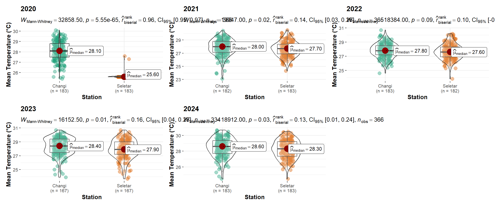
5.4 Compare Daily Rainfall Total (mm) for Station(s) Across the specified Year
Hypothesis
H0 : Daily Rainfall Total in 2021 across different stations are equal
H1 : Daily Rainfall Total in 2021 across different station are not equal
# User define the parameter
selected_year <- "2021"
selected_StatApproach <- "nonparametric"
#Filter data for the specified year
allstations_year <- weather %>%
group_by(Station) %>%
filter(Year == selected_year)
ggbetweenstats(data = allstations_year,
x = Station,
y = `Daily Rainfall Total (mm)`,
type = selected_StatApproach,
mean.ci = TRUE,
pairwise.comparisons = TRUE,
pairwise.annotation = FALSE,
pairwise.display = "none",
sig.level = NA,
p.adjust.method = "fdr",
messages = FALSE)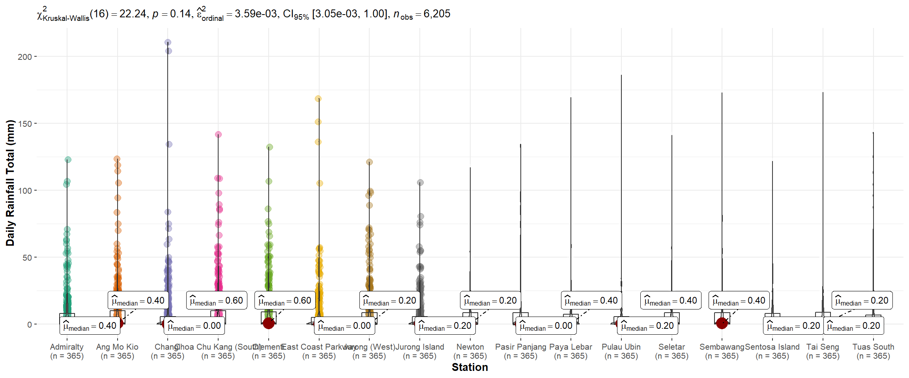
5.5 Compare Daily Rainfall Total (mm) for One Station Across Different Years
Hypothesis
H0 : Daily Rainfall Total in Ang Mo Kio across different years are equal
H1 : Daily Rainfall Total in Ang Mo Kio across different years are not equal
selected_onestation <- "Ang Mo Kio"
selected_StatApproach <- "nonparametric"
#Filter Ang Mo Kio data
onestation_data <- weather %>%
filter(Station == selected_onestation)
ggbetweenstats(data = onestation_data,
x = Year,
y = `Daily Rainfall Total (mm)`,
type= selected_StatApproach, # for non-parametric
mean.ci = TRUE,
pairwise.comparisons = TRUE,
pairwise.annotation = FALSE,
pairwise.display = "none",
sig.level = NA,
p.adjust.method = "fdr",
messages = FALSE)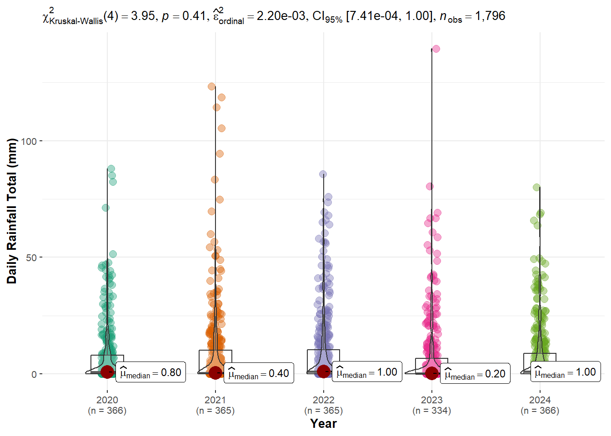
5.1 CDA - Mean Temp Across Stations for One Year
selected_year <- 2021
selected_StatApproach <- "nonparametric"
weather %>%
filter(Year == selected_year) %>%
ggbetweenstats(
x = Station,
y = `Mean Temperature (°C)`,
type = selected_StatApproach,
mean.ci = TRUE,
pairwise.display = "none",
p.adjust.method = "fdr"
)5.2 CDA - Mean Temp for One Station Across Years
weather %>%
filter(Station == "Ang Mo Kio") %>%
ggbetweenstats(
x = Year,
y = `Mean Temperature (°C)`,
type = "nonparametric",
mean.ci = TRUE,
pairwise.display = "none",
p.adjust.method = "fdr"
)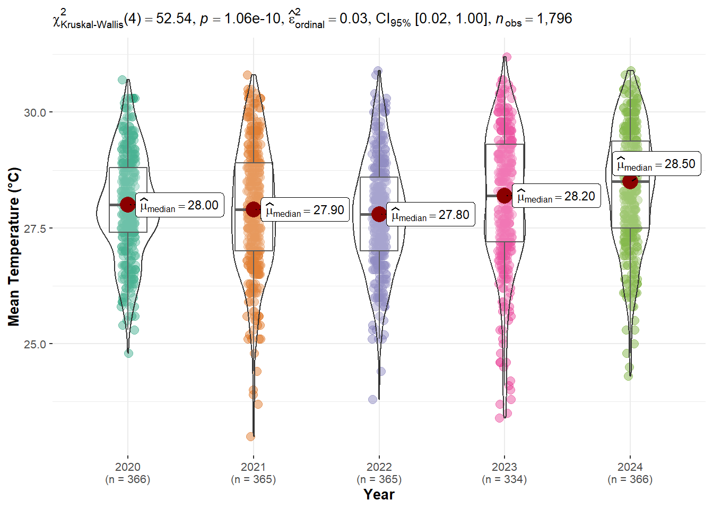
5.3 CDA - Mean Temp for Two Stations Across Years
weather %>%
filter(Station %in% c("Seletar", "Changi")) %>%
grouped_ggbetweenstats(
x = Station,
y = `Mean Temperature (°C)`,
grouping.var = Year,
type = "nonparametric",
mean.ci = TRUE,
pairwise.display = "none",
p.adjust.method = "fdr"
)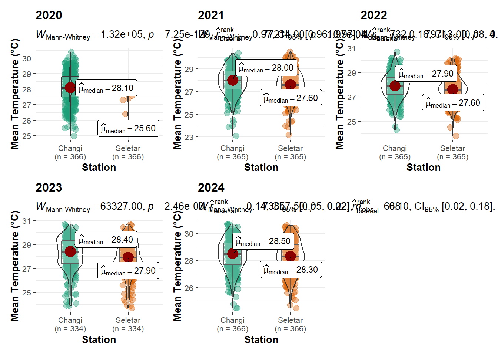